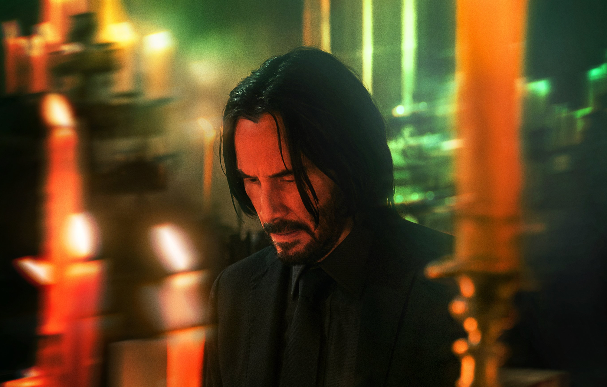

John Wick Seria
Seria filmów pt. John Wick jest o zabójcy,
w którego wciela się Keanu Reeves.
Po przejściu na emeryturę ze względu na nieuleczalną chorobę
jego żona Moynahan umiera.
Zostawiła ona mu w prezencie psa,
który stał się dla niego ważniejszy od jego ulubionego samochodu.
Będąc przywiązanym do psa zaczął zabierać go wszędzie.
Tankując swojego Mustanga BOSS 429 z 1969 roku
podszedł do niego pewny mężczyzna z zapytaniem o cenę samochodu.
Po powrocie do domu przyjeżdzają do niego ludzie ze stacji i włamują się do domu.
John Wick został pobity i ukradziono mu samochód
lecz punktem zapalnym jego zemsty było zabicie prezentu od zmarłej żony.
Reżyserem jest Chad Stahelski
Urodzony 20 wrzeźnie 1968 roku w Palmer w USA reżyser
załóżył własną wytwórnię filmów akcji 87North Productions.
Jest odpowiedzialny za wyprodukowanie takich filmów jak:
John Wick, Matrix czy Highlander.